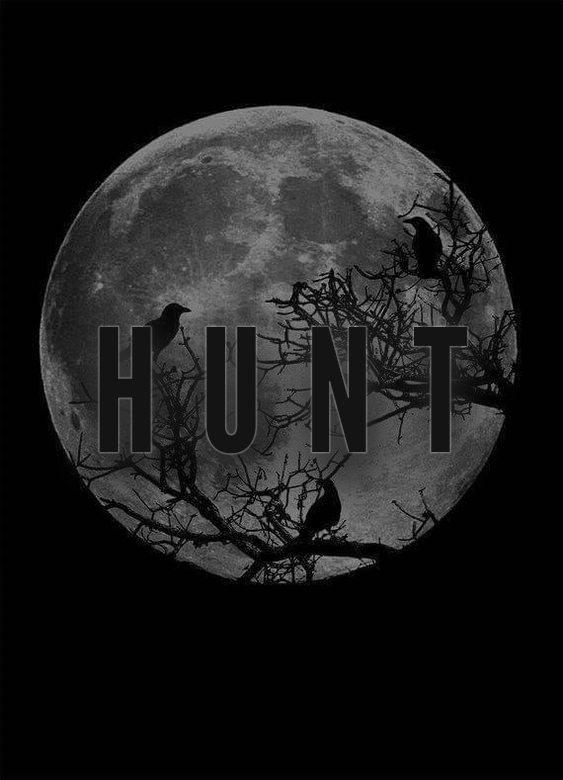

Homo Novus. Оборотни.
Оглавление:

Введение
Клыки проедают плоть, ломают кости и дух. Оборотни вкладывают всё своё бушующее неистовство в каждый укус, в каждый взмах огромной лапой, переставая подавать злостное рявканье только тогда, когда решают насладиться звуком лопающегося черепа, прочувствовать, как в лапе застывает мозговой фарш, смешанный с костными осколками. Говорят, что ярость Оборотня — его великое проклятие и великое благословление.
История оборотней тянется с разных континентов: монгольские шаманы Заарин делились видениями о том, что огромный чёрный волк Тамерлан и его волчье войско оставляли за собой горы из черепов поверженных врагов. Странствующие по ближнему востоку сновидцы Фукара упоминали о том, как огромный полосатый волк Саладин, словно в тигриной расцветке, уничтожает в одиночку сотни рыцарей Ричарда Львиное Сердце, размазывая их тела по застенкам Иерусалима.
Впервые что-то похожее на оборотней истолковали якутские шаманы Ойуун. Они упоминали о том, что те способны видеть под закрытыми веками происходящее в неком мире, в котором может угадываться один из уровней Пенумбры, Астрал. Погружаясь в видения, они слышали озарения некой Гезарис.
Гезарис или более её распространенное Мать Природа — неизвестная, нематериальная сущность, обитающая на среднем уровне Пенумбры, способная изъявлять свою волю в физический мир через других, избранных людей.
Многие дают ей форму мстительного духа природы, который проснулся не так давно, но который стремится уничтожить человечество через своих слуг Оборотней, давая им становление. Не все оборотни способны слышать Гезарис, а лишь Ведуны — верховные шаманы прайдов оборотней.
Ведунам даёт становление сама Мать Природа, нарекая их наиболее крепкой связью с Миром Духов, в то время как другие из племени получают становление, когда выпивают кровь Ведуна и неделю проходят болезненный процесс становления. За эту неделю душа волка и человека внутри тела должны научиться разделяться и объединяться одновременно. Таким образом душа оборотня находится одновременно в двух мирах.
Мать Природа фанатично ненавидит человечество и вампиров с магами в частности, как главных виновников явления урбанизации. Каждый раз, когда в физическом мире кто-то втыкает балку в землю или прокладывает бетонную арматуру — отражение этих действий находится в Гезарис, чувствующей боль за изуродованную Землю.
Появление Оборотней можно считать прихотью этой самой Гезарис, которая решает обратить своих детей против человеческой цивилизации, уродующей природу. Каждое племя оборотней отличается расцветкой, физическими показателями и своим подходом к использованию Духовной Связи, с помощью которой они колдуют разные заклинания в форме волка.
Духовная Связь — связь оборотня с Миром Духов, из которого он черпает свою энергию. На этом мире зиждется его сверхъестественная сила, которую он пополняет при медитации под луной. Измеритель максимального запасов духовной энергии выражается в 100%.
Оборотень может устраивать разные проекции, перенесенные из Астрала, зовущиеся Духовным Искусством, они же заклинания Оборотней. С помощью духовной связи оборотень может превращаться в огромного волка под луной, а так же сохранять стабильность одной из частей своей души, которая постоянно находится в Астрале.
Нарушить связь можно очень легко, достаточно длительное время находиться в городе, не медитировать или не выходить под луну. В этом случае оборотень будет чувствовать постоянный и страшный стресс, который, в конце концов, приведёт оборотня к исчезновению одной из частей его души и скорой смерти, замаскированной под сердечный приступ.
Бывшее общество оборотней
Стандартной ячейкой общества оборотней считалось Племенем.
Племя — ключевая форма объединения общества оборотней. Обычно Племя никогда не отделяется друг от друга как из-за риска сойти с ума от одиночества и внутреннего зверя, так и из-за животной конкуренции среди оборотней, которые видят в одиночках шанс самоутвердиться в прайде.
В племени присутствуют две касты — оборотни и щенки. Если с оборотнями всё понятно, то щенками зовутся необращенные в оборотней дети до 16 лет, когда они должны вкусить дикой жизни и охотиться вместе с прайдом даже будучи в своей слабейшей форме. Возраст был выбран непросто так, ибо связан он с внутренней жестокостью детей, стремящиеся самоутвердиться в глазах более опытных оборотней и среди своего молодого окружения волчат. Из-за чего во всех племенах распространены тёрки молодых соплеменников, так и стремящиеся вцепиться друг к другу в глотки подобно бродячим псам. О какой-то дисциплине в таком окружении говорить излишне.
Новоявленные борцы в форме огромных волков? Я вас умоляю, они всего лишь пубертатные дети, чью ярость и неудовлетворенность пытаются направить в грамотное для прайда русло. Воители за право первенство природы? Ни разу. Оборотни в мире «Кровавого Тропа» — это дети на войне, не более. Многие оборотни умирают до 30 лет, по своим умственным показателям соответствующие тем 16-18 летним детям. Увидеть живого оборотня , которому исполнилось 100 лет — настоящее чудо и таких в прайде обычно 2-3 штуки, один из которых точно является шаманом. Основной костяк оборотней — дети, которые пользуются любой попыткой поднять свой авторитет. Им страшна мысль о том, что их обзовут трусами, слабаками, они постоянно сравнивают себя с другими соплеменниками. Взвинченная тревожная атмосфера в прайде — весьма нормальное явление.
Оборотни внутри одного прайда дерутся друг с другом чуть ли не чаще, чем с оборотнями из других прайдов или котериями Вампиров. Именно кровососов они нарекли заклятыми врагами, выводя их уничтожение главной целью успеха в их маленькой войне.
Вампиры — существа городские, они не могут позволить себе часто выезжать за черту бетонных джунглей, на десятки или даже сотни лет оставаясь в своих городских доменах. Это обязывает их сохранять подобный уклад, стремиться к урбанизации территорий, что крайне не нравится оборотням. Оборотни редко покидали свои лесные угодья, но даже если 1 молодой оборотень встретит котерию молодых вампиров, перевес силы будет в его сторону. Старейшины рассказывают ужасные истории, как 1 оборотень мог выйти победителем из схватки с 3-4 молодыми вампирами, что заставляет избегать их.
Но что не даёт оборотням уничтожить вампиров, если они такие сильные? Ответ: оборотни никогда не отличались интеллектом, всегда превознося инстинкты. Если бы не нормализация нездорового соперничества внутри прайда, если бы сами оборотни не истребляли племена в яростной конкуренции и если бы они имели смелость чаще заглядывать в города — Вампиры бы не занимали доминирующую по численности позицию среди чудовищ.
Новое общество оборотней
Новое общество — сказано громко. Общества оборотней больше не существует. Перестали существовать племена — они давно канули в лету после индустриальной революции. Перестали существовать обряды обращения — теперь обращать в оборотней крайне сложно из-за дефицита ведунов и шаманов в целом. Исчезла первоначальная цель — никто не слышит Мать Природу. В современном мире Оборотней осталось совсем мало, едва ли наберётся 500 на весь мир, но их малочисленность сделала выживших крайне осознанными и осторожными, способными выживать даже в городе, хоть и заметно слабея там. Чтобы не умереть — оборотень должен либо восходить на высокие здание и медитировать под луной, либо находиться каждую ночь за чертой города.
После индустриальной революции оборотней стали гнать вампиры на юг, сначала выгнав в Ливию, а затем вампиры маскировали карательные кампании против оборотней как за колонизацию Африки европейцами. На протяжении почти 150 лет на глазах исчезало общество оборотней и сам их вид. Раньше были африканские племена людей-ягуаров, людей-тигров, львов, но теперь остались только волки.
Святыни разрушены, мало кто уже строит тотемы и фетиши, мало кто обучает тому, как их возносить. По собственной воле обращать оборотня также опасно из-за того, что оборотня для полноценной жизни нужно по особому воспитывать, нести за него ответственность, а молодой оборотень — всегда индивидуалист, который рано или поздно украдкой уйдёт от своего наставника в город, где и помрёт от рук вампиров, выслеживающие остатки этого рода.
Теперь цель только одна — выжить самому, не сойдя с ума и подавляя зверя, стремящегося умереть истекая от ран кровью, а не тихо скуля от своего ничтожного положения.
Силы и слабости оборотня
В современные ночи Оборотень может иметь только одну форму — форму волка. Именно осколки волчьих племён выжили, в то время как остальные были умерщвлены клыками Вампиров.
Оборотень может принимать форму человека и волка-оборотня, но последнее не соответствует привычному виду дикого волка. В форме оборотня они представляют собой усредненное между человеком и волком, девятифутовую машину для убийств, которая вселяет сверхъестественный ужас в смертных и некоторых вампиров.
Они дико сильны, могут без проблем поднять вес до тонны, кидаться машинами, разбирать крупные завалы или сломать тело вампира в своей огромной лапе.
Их регенерация способна быстро лечить легкие раны, неспешно затягивать раны средней тяжести и позволить убежать с тяжёлыми ранами, с которыми нельзя драться, но которые можно зализать вне боя.
Они крайне быстры на своих четырёх лапах, неимоверно выносливы, но при этом не могут полноценно размышлять стратегически и тактически.
Их манёвры всегда инстинктивны и полны ярости, но не холодного расчёта и анализа, из-за чего их и можно победить даже в такой форме, хоть это и крайне сложно. Превращаться в эту форму он может исключительно при наличие хотя бы 20% духовной связи и только ночью, когда присутствие Матери Природы худо бедно ощущается душой. Когда счётчик опускается ниже 15% Духовной Связи, то Оборотень получает 25% шанс превратиться в человека на каждом следующем ходу и не сможет превратиться в оборотня пока не пройдёт медитацию под луной.
Способности оборотней, они же Духовные Искусства, являются переносом явлений из Астрала под манипуляциями души оборотня, которая даёт перенесенной энергии форму. Эта форма может быть в форме портала, с помощью которого оборотень может переместиться в Астрал, а из Астрала в настоящий мир, но уже с другой стороны, нападая на врага, при этом скрыв своё перемещение. Опыт прошлых соплеменников может подсказать как вести себя в этой битве, дабы привести себя к победе. Проекции других оборотней могут стать хорошими напарниками, так как лишь немного уступают в своей силе настоящему оборотню. Это лишь примеры, но каждая из способностей исходит из Духовной Связи оборотня с Астралом, без которого он не может использовать свои заклинания.
Если вампиры могут регенерировать после ожогов, хоть и медленно, но верно, то ожоги для оборотня равноценны тяжёлым травмам, которые регенерируют гораздо медленнее Вампирских. Им страшен огонь, ибо он так же притупляет их Духовную Связь.
Серебро — их страшнейший враг. Серебро обжигает кожу, сжигает внутренности и разлагает кости. Один вид серебра способен заставить оборотня начать нервничать. Этот же металл может нанести им невероятную боль, сродни сожжению заживо. Если огонь ограничивает способности оборотня, то серебро способно начать мучать оболочку оборотня, замедляя её, делая уязвимей и чувствительней к боли.